In this article, we will iteratively optimize a series of matrix multiplication kernels written in CuTe DSL. The final kernel reaches performance on par with cuBLAS and we will walk through every bit of optimization involved.
You will find all the code available on my Github*
*This is still a work in progress.
| Kernel | TFLOP/s | vs cuBLAS % |
|---|---|---|
| Naive Matmul | 1.33 | 11.5% |
| Tiled MMA | 7.37 | 64.1% |
| MMA + Bank Conflict Fix | 8.34 | 72.5% |
| Pipelining | 7.40 | 64.3% |
| Pipelining + Coalesced | 11.17 | 97.2% |
| Pipelining + Col-Major | 11.82 | 102.8% |
| Pytorch cuBLAS (baseline) | 11.50 | 100.0% |
CuTe DSL
CuTe DSL is the Python DSL built on top of CUTLASS. It lets us describe tiles, layouts, copies, and MMA-style computation at a much higher level than handwritten CUDA, while still exposing the pieces that matter for performance.
In practice, that means we can reason in terms of CTA tiles, warp tiles, shared-memory layouts, and copy partitions instead of hand-deriving every thread mapping ourselves.
Kernel 1 - Naive Matrix Multiplication
The simplest GPU implementation maps one thread to each output element \(C_{ij}\). That thread loads an entire row of A and an entire column of B from global memory, then accumulates their dot product.
Let's take a look at this visually with a small matrix


Implementation:
@cute.kernel
def matmul_kernel(A: cute.Tensor, B: cute.Tensor, C: cute.Tensor, M, N, K):
bidx_x, bidx_y = cute.arch.block_idx()[0], cute.arch.block_idx()[1]
bdim_x, bdim_y = cute.arch.block_dim()[0], cute.arch.block_dim()[1]
tidx_x, tidx_y = cute.arch.thread_idx()[0], cute.arch.thread_idx()[1]
col = bidx_x * bdim_x + tidx_x
row = bidx_y * bdim_y + tidx_y
# no early return supported yet
# ref - https://docs.nvidia.com/cutlass/latest/media/docs/pythonDSL/cute_dsl_general/dsl_control_flow.html
acc = cute.Float32(0)
if row < M and col < N:
for k in range(K):
acc += cute.Float32(A[row, k]) * cute.Float32(B[k, col])
C[row, col] = cute.Float16(acc)
Performance and Profiling
This kernel has 1.33 TFLOP/s with a kernel execution time of 13.29 ms. This is roughly ~11% of what cuBLAS gives us.
Now let's turn our attention to what the NCU profiler has to say about this kernel.
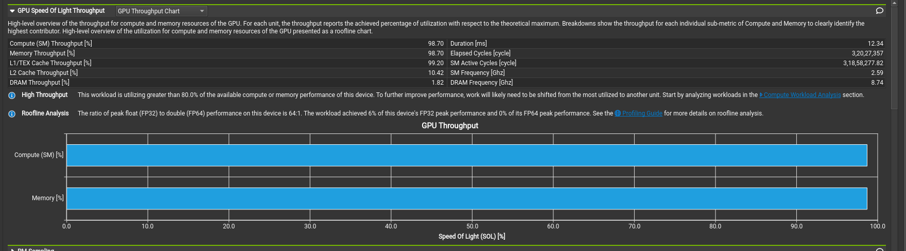
On a first glance, it says that the compute and memory throughput to be extremely high, but how can this be possible? All we wrote was an extremely naive kernel in hardly 15 lines.
Pay attention to two things:
- The line stating "The workload achieved 6% of this device's FP32 peak performance"
- Expand the section and check the individual breakdown for the compute throughput
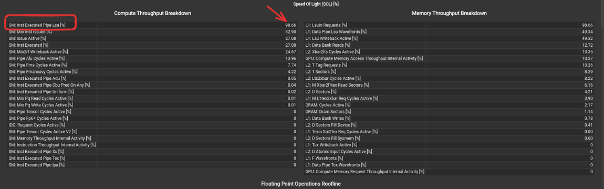
Oh, what's this? From the docs, we get The LSU pipeline issues load, store, atomic, and reduction instructions to the L1TEX unit for global, local, and shared memory And that's 98% of our compute throughput! This means the warp scheduler is almost constantly issuing load/store instructions and is hardly using any of our compute units.
Kernel 2 - Tiled MMA
The first big jump comes from tiling the problem. Instead of having every thread access data directly from global memory, we move tiles of A and B into shared memory, partition them across threads, and accumulate into register fragments.
One terminology note: in this post I use “MMA” in the CuTe sense of warp-cooperative matrix multiply-accumulate structure. We are not in fact using tensor cores rather better tiling and register-level accumulation.
1) Map each block and thread to a tile
This decides which block of A, B, and C this CTA works on.
tid_x, _, _ = cute.arch.thread_idx()
bid_x, bid_y, _ = cute.arch.block_idx()
tiler_coord = (bid_x, bid_y, None)
gA = cute.local_tile(A, cta_tiler, tiler_coord, proj=(1, None, 1))
gB = cute.local_tile(B, cta_tiler, tiler_coord, proj=(None, 1, 1))
gC = cute.local_tile(C, cta_tiler, tiler_coord, proj=(1, 1, None))
Think of this as assigning work: this block gets one tile of output C, and the matching tiles of A and B needed to compute it.
2) Create thread value partitions for each tile
For each thread index, we get a slice of the value it owns from the tv layout, and then apply it using partition on both source and destination.
smem = cutlass.utils.SmemAllocator()
sA = smem.allocate_tensor(cutlass.Float32, smem_layout_a, 16)
sB = smem.allocate_tensor(cutlass.Float32, smem_layout_b, 16)
thr_copy_a = tiled_copy_a.get_slice(tid_x)
thr_copy_b = tiled_copy_b.get_slice(tid_x)
tAgA = thr_copy_a.partition_S(gA) # source in global
tBgB = thr_copy_b.partition_S(gB)
tAsA = thr_copy_a.partition_D(sA) # destination in shared
tBsB = thr_copy_b.partition_D(sB)
3) Build a 1x1x1 MMA Atom
mma_op = cute.nvgpu.MmaUniversalOp(cutlass.Float32)
mma_atoms_layout = cute.make_layout((mma_m, mma_n, 1), stride=(mma_n, 1, 0))
tiled_mma = cute.make_tiled_mma(
mma_op,
atom_layout_mnk=mma_atoms_layout,
)
thr_mma = tiled_mma.get_slice(tid_x)
tCsA = thr_mma.partition_A(sA)
tCsB = thr_mma.partition_B(sB)
tCgC = thr_mma.partition_C(gC)
tCrA = tiled_mma.make_fragment_A(tCsA)
tCrB = tiled_mma.make_fragment_B(tCsB)
tCrC = tiled_mma.make_fragment_C(tCgC)
tCrC.fill(0.0)
`tCrC` is the accumulator fragment in registers. This is where repeated MMA operations accumulate partial sums.
4) Main K loop
For each K tile: we first load from global to shared memory, and then into the register fragments. Once the tile is in registers, we run the GEMM and then move to the next tile.
num_tiles_k = cute.size(tAgA, mode=[3])
num_mma_k = cute.size(tCrA, mode=[2])
for tile_k_idx in range(num_tiles_k, unroll_full=False):
cute.copy(tiled_copy_a, tAgA[None, None, None, tile_k_idx], tAsA)
cute.copy(tiled_copy_b, tBgB[None, None, None, tile_k_idx], tBsB)
cute.arch.barrier() # like __syncthreads()
for mma_k_idx in range(num_mma_k, unroll_full=True):
cute.autovec_copy(tCsA[None, None, mma_k_idx], tCrA[None, None, mma_k_idx])
cute.autovec_copy(tCsB[None, None, mma_k_idx], tCrB[None, None, mma_k_idx])
cute.gemm(
tiled_mma,
tCrC,
tCrA[None, None, mma_k_idx],
tCrB[None, None, mma_k_idx],
tCrC,
)
cute.arch.barrier()
5) Epilogue: store to C
After accumulation, we can write results back.
tCrC.store(epilogue_op(tCrC.load()))
c_copy_atom = cute.make_copy_atom(cute.nvgpu.CopyUniversalOp(), cutlass.Float32)
cute.copy(c_copy_atom, tCrC, tCgC)
Performance and Profiling
This kernel has 7.37 TFLOP/s and we are already at ~64.1% of what cuBLAS gives us.
Profiling time!
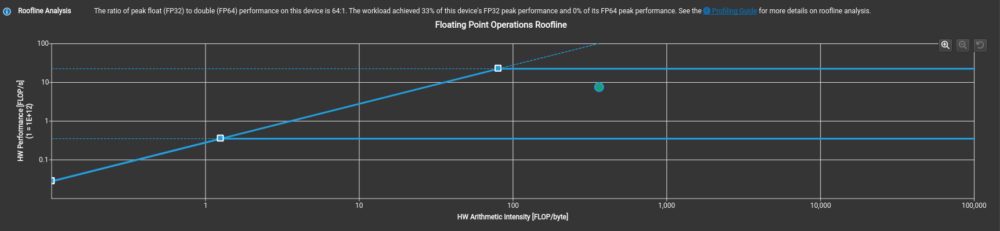
Great! This achieves 33% of this device's FP32 peak performance, and take a look at the roofline.
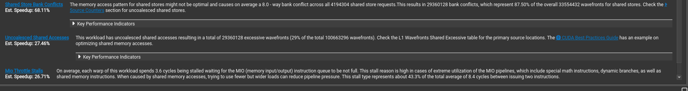
From the recommendations, the most taxing one seems to be bank conflicts, so why don't we try to fix that?
Kernel 3 - Fixing Bank Conflicts!
Bank conflicts occur in shared memory and it has very different properties compared to global memory.
SMEM is organized into 32 banks, each bank being 32 bit wide.
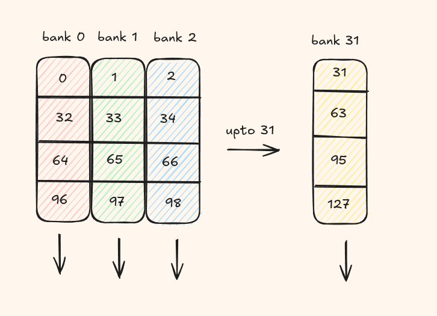
Threads in a warp must not access different addresses within the same bank. Otherwise, those requests are serialized across multiple cycles.
This situation is known as a bank conflict. If N threads access different addresses of the same bank, the result is an N-way bank conflict and the warp's memory request takes N cycles to complete.
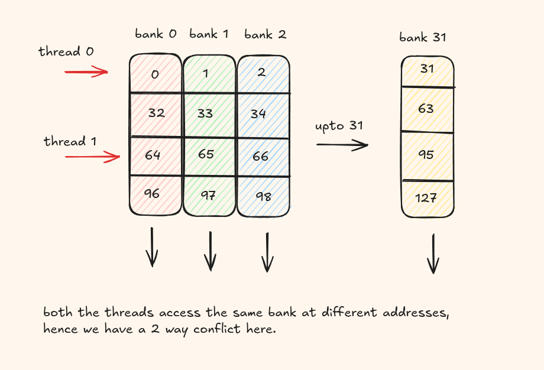
The easiest way to fix this is to add some padding to change the layout of the addresses.
@cute.jit
def sgemm_host(a: cute.Tensor,
b: cute.Tensor,
c: cute.Tensor,
copy_bits: cutlass.Constexpr = 128):
tile_m, tile_n, tile_k = cta_tiler
mma_m, mma_n = mma_tiler
threads = mma_m * mma_n
a_major_mode = cutlass.utils.LayoutEnum.from_tensor(a)
b_major_mode = cutlass.utils.LayoutEnum.from_tensor(b)
print(a_major_mode, b_major_mode) # both row major
smem_layout_a = cute.make_layout(
shape=(tile_m, tile_k), stride=(1, tile_m + 4) # + 4 for padding
)
smem_layout_b = cute.make_layout(
shape=(tile_n, tile_k), stride=(1, tile_n + 4)
)
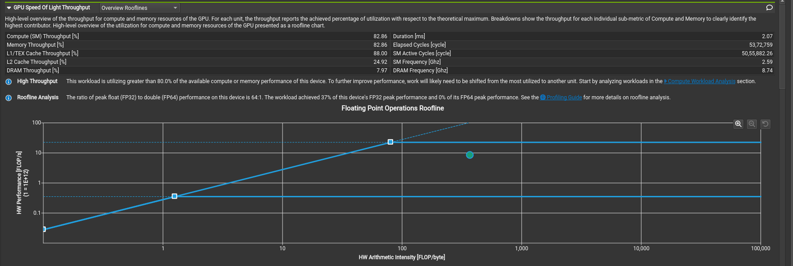
No more bank conflicts, and improved peak FP32 performance as well.
This kernel now has 8.34 TFLOP/s and we are at ~71.1% of cuBLAS!
Kernel 4 - Multistage Pipelining with cp.async
Usually, data transfers from global memory to shared memory are slower than performing the actual arithmetic operation. During this time, all the threads are stalled/idle waiting for data and this kills our performance. We need a way to hide this latency. We use a technique called pipelining where we try to overlap the data transfers along with computation.
The idea is while we compute on the current tile, we asynchronously load the next tile from global memory into another shared-memory stage.
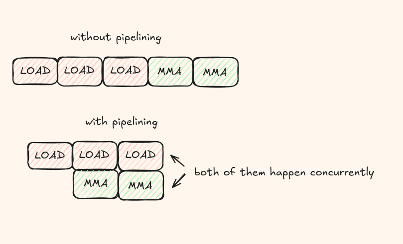
So instead of first loading everything into the shared memory, we can prefetch N tiles, perform a MMA operation, fetch another tile, perform another MMA operation and so on. This process is asynchronous so all of them happen at the same time!
Pipeline setup (3 stages)
We choose a 3-stage shared-memory pipeline and keep the same CTA/MMA tile sizes.
num_stages = 3
cta_tiler = (128, 128, 8)
mma_tiler = (16, 16)
one stage is being consumed by MMA, one stage is ready next, and one stage is available for incoming async copies. This means that we need to allocate 3x more space for the shared memory but this is usually fine.
1) Tile mapping and per-thread partitions
As before, we tile the matrices A and B. Then each thread gets its copy partitions for global-to-shared movement.
tid_x, _, _ = cute.arch.thread_idx()
bid_x, bid_y, _ = cute.arch.block_idx()
tiler_coord = (bid_x, bid_y, None)
gA = cute.local_tile(A, cta_tiler, tiler_coord, proj=(1, None, 1))
gB = cute.local_tile(B, cta_tiler, tiler_coord, proj=(None, 1, 1))
gC = cute.local_tile(C, cta_tiler, tiler_coord, proj=(1, 1, None))
smem = cutlass.utils.SmemAllocator()
sA = smem.allocate_tensor(cutlass.Float32, smem_layout_a, 16)
sB = smem.allocate_tensor(cutlass.Float32, smem_layout_b, 16)
thr_copy_a = tiled_copy_a.get_slice(tid_x)
thr_copy_b = tiled_copy_b.get_slice(tid_x)
tAgA = thr_copy_a.partition_S(gA); tAsA = thr_copy_a.partition_D(sA)
tBgB = thr_copy_b.partition_S(gB); tBsB = thr_copy_b.partition_D(sB)
2) Prologue: prefetch global to shared
Before compute starts, we prefill `stage - 1` tiles into the shared memory. This gives compute something ready to consume immediately.
smem_pipe_depth = cute.size(tAsA, mode=[3]) # 3 stages
num_tiles_k = cute.size(tAgA, mode=[3])
gmem_pipe_read = cutlass.Int32(0)
for pipe in range(0, smem_pipe_depth - 1, unroll_full=True):
cute.copy(tiled_copy_a, tAgA[None, None, None, gmem_pipe_read], tAsA[None, None, None, pipe])
cute.copy(tiled_copy_b, tBgB[None, None, None, gmem_pipe_read], tBsB[None, None, None, pipe])
cute.arch.cp_async_commit_group()
gmem_pipe_read += 1
3) Build MMA fragments and initialize pipe pointers
We create A/B/C MMA fragments, zero the accumulator, then initialize which shared stage to read from and which stage to write next.
thr_mma = tiled_mma.get_slice(tid_x)
tCsA = thr_mma.partition_A(sA)
tCsB = thr_mma.partition_B(sB)
tCgC = thr_mma.partition_C(gC)
tCrA = tiled_mma.make_fragment_A(tCsA[None, None, None, 0])
tCrB = tiled_mma.make_fragment_B(tCsB[None, None, None, 0])
tCrC = tiled_mma.make_fragment_C(tCgC)
tCrC.fill(0.0)
smem_pipe_read = cutlass.Int32(0)
smem_pipe_write = cutlass.Int32(smem_pipe_depth - 1)
4) Mainloop: overlap memory and compute
This is the core pipeline. We keep the compute running while issuing async loads for the next tile.
for _ in range(num_tiles_k, unroll_full=False):
for mma_k_idx in range(num_mma_k, unroll_full=True):
if mma_k_idx == num_mma_k - 1:
cute.arch.cp_async_wait_group(smem_pipe_depth - 2)
cute.arch.barrier()
mma_k_next = (mma_k_idx + 1) % num_mma_k
cute.autovec_copy(tCsA_[None, None, mma_k_next], tCrA[None, None, mma_k_next])
cute.autovec_copy(tCsB_[None, None, mma_k_next], tCrB[None, None, mma_k_next])
if mma_k_idx == 0:
cute.copy(tiled_copy_a, tAgA[None, None, None, gmem_pipe_read], tAsA[None, None, None, smem_pipe_write])
cute.gemm(tiled_mma, tCrC, tCrA[None, None, mma_k_idx], tCrB[None, None, mma_k_idx], tCrC)
if mma_k_idx == 0:
cute.copy(tiled_copy_b, tBgB[None, None, None, gmem_pipe_read], tBsB[None, None, None, smem_pipe_write])
cute.arch.cp_async_commit_group()
While the current tile is being computed, the next tile is being loaded, and so on.
cp_async_wait_group(N)
waits until N groups are complete. This function blocks execution until the specified number of previously committed cp.async-groups have completed their memory transfers.
5) Epilogue and store
The final stage where we apply any transformation if needed and then write back to C.
cute.arch.cp_async_wait_group(0)
cute.arch.barrier()
tCrC.store(epilogue_op(tCrC.load()))
c_copy_atom = cute.make_copy_atom(cute.nvgpu.CopyUniversalOp(), cutlass.Float32)
cute.copy(c_copy_atom, tCrC, tCgC)
I was a bit surprised when i first saw that the kernel did worse than just the Tiled MMA kernel
This kernel gives 7.40 TFLOP/s and is slower than the previous kernel. Profiling this was very important to understand why.
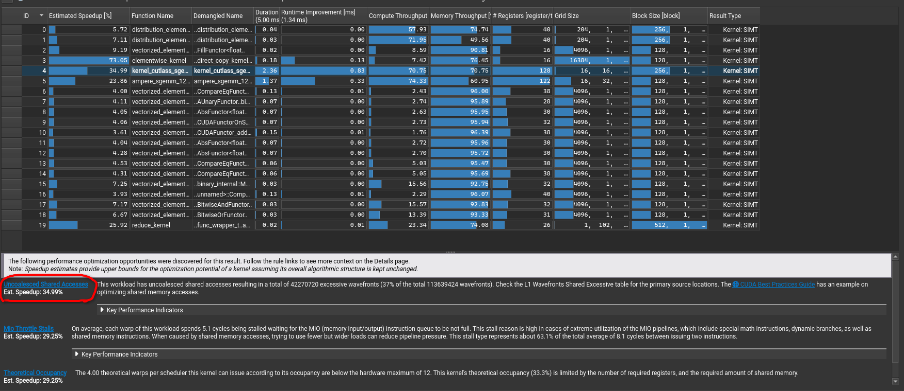
Aha, even though we managed to hide latency, we actually introduced lots of uncoalesced memory accesses and this in fact is making it slower than our way simpler kernel we had.
And if you want to directly inspect which source code line is having the major impact, you can directly navigate to the Source section.
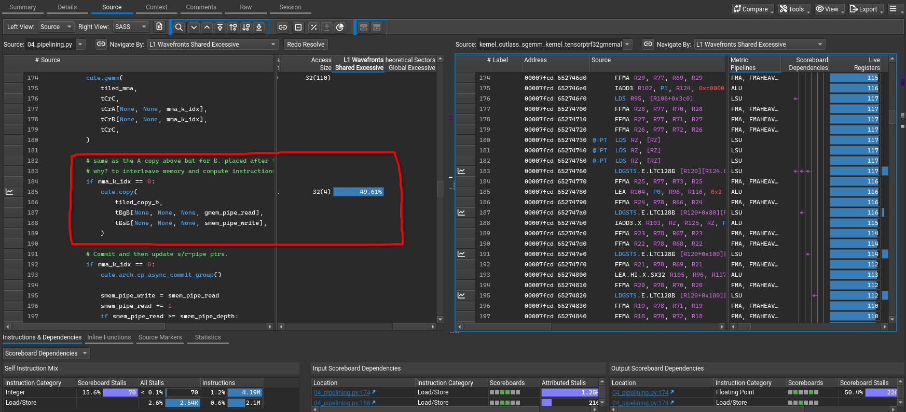
Take a look at the highlighted section, it is in fact the tiled copy from GMEM to SMEM that is either bank conflicted or has a lot of uncoalesced accesses.
Kernel 5 - Warp tiling and Coalesced Epilogue
In this kernel, we introduce warp tiling. Instead of treating the full 256-thread CTA as one flat compute group, we divide the CTA tile into warp-owned subtiles. The CTA still computes a 128 x 128 output tile, but now each warp owns a 32 x 64 region.
We also improve the copy layouts by vectorizing the store and load.
There is also a very important improvement in the epilogue. In the previous kernel, accumulators are written more directly from registers to global memory. The problem is that accumulator fragments are arranged for compute but not for efficient global stores. Here, we introduce an intermediate shared-memory tensor sC as a staging area. Each warp first writes its accumulator fragment into shared memory, and then the threads cooperatively reload and store C in a coalesced global-memory pattern.
This kernel gives a massive 11.17 TFLOP/s and we are at 97.2% of the cuBLAS performance!
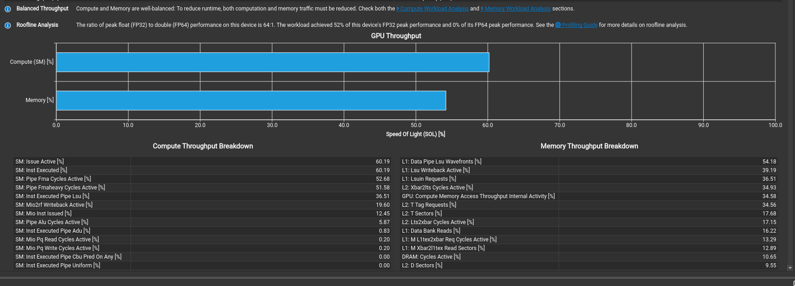
Amazing, this kernel uses 52% of the peak fp32 performance and the compute breakdown actually shows that the FMA piepline is the most busy compared to the previous kernels where it was always being stalled by instructions.
Kernel 5 - Using a Column Major Layout
In this kernel, we use a column major format for matrix B. The entire compute pipeline remains the same but by using a column major format for B, we improve two things - better coalesced loads for B along with 128 bit vectorized copies for B.
This kernel finally outperforms cuBLAS with 11.82 TFLOP/s, that is 102% of the cuBLAS performance!
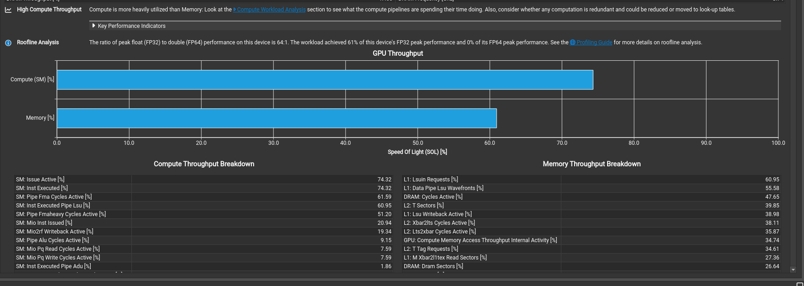
By making this simple change, we also see the overall compute performance has also improved with peak fp32 performance climbing to 62%.
Next Steps
- Use tensor cores to accelerate computation (currently using FPU MMA).
- Introduce predicates to handle edge cases for all matrix sizes.
- Fix remaining uncoalesced memory accesses.
- Explore other segments of the NCU profiler.
- Map PTX instructions to verify assumptions.
References
A lot of this work has been inspired from these resources-